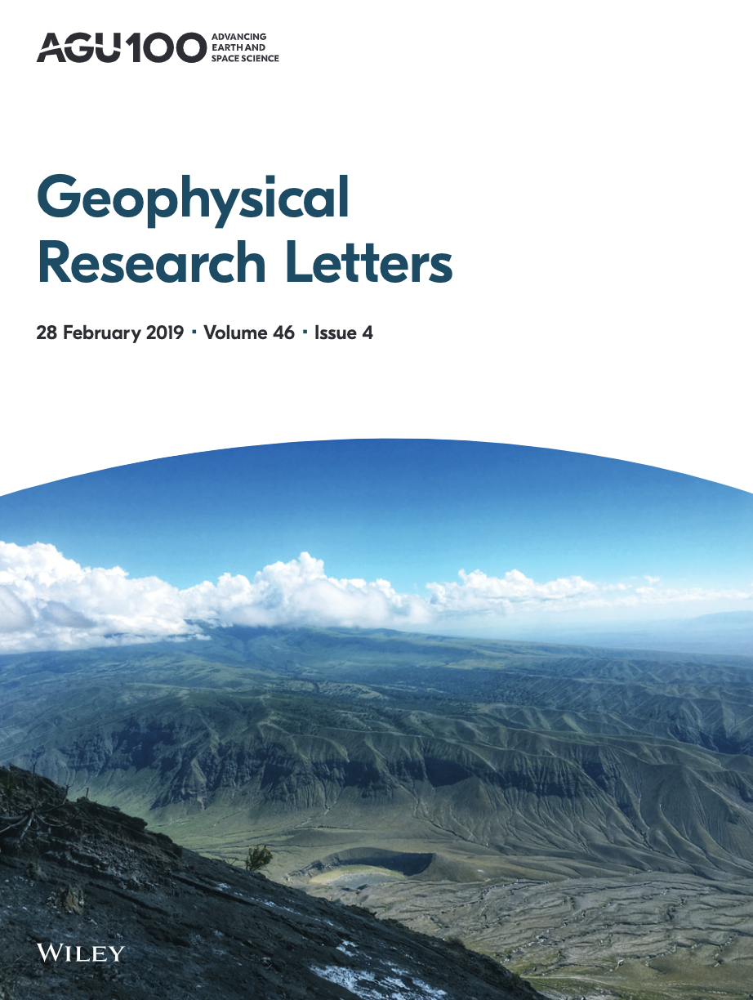
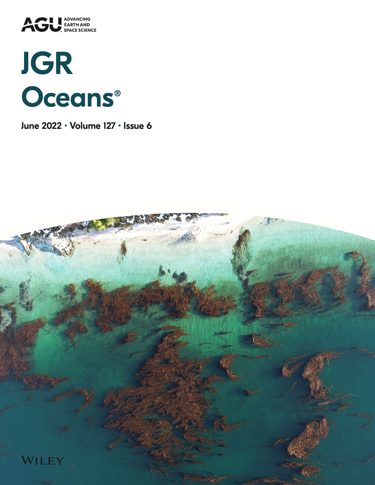
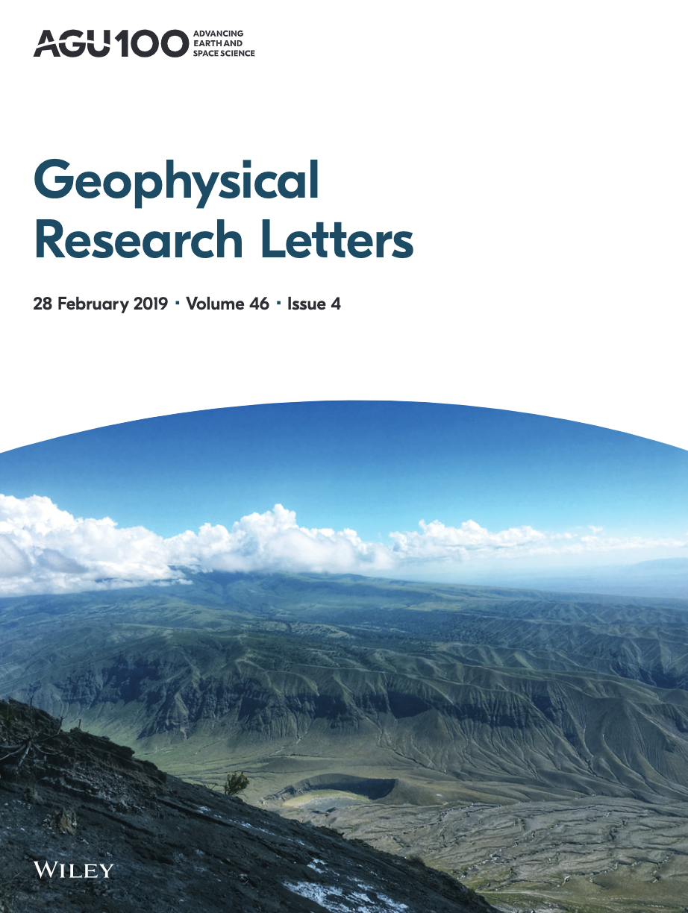
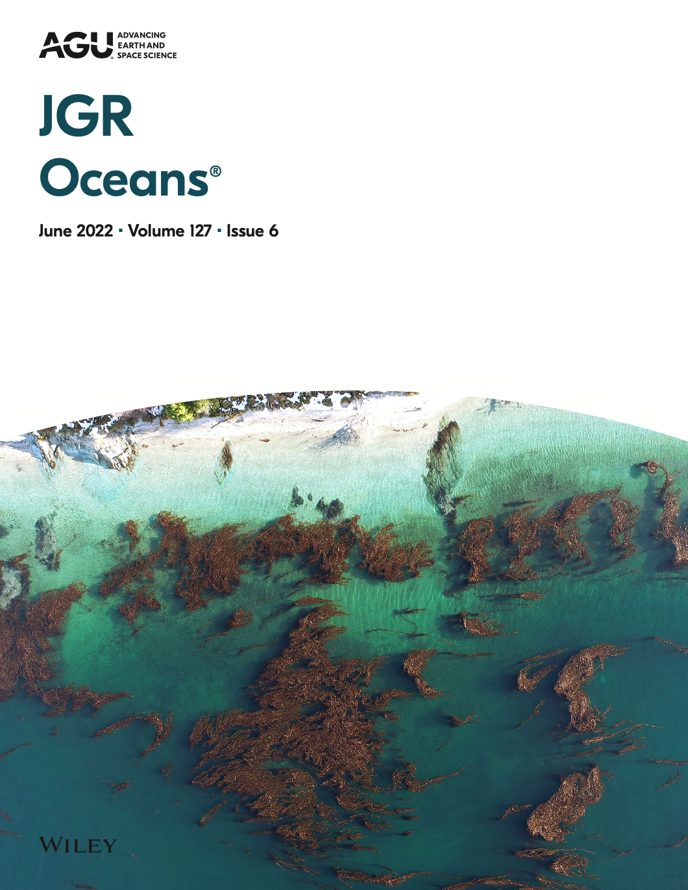
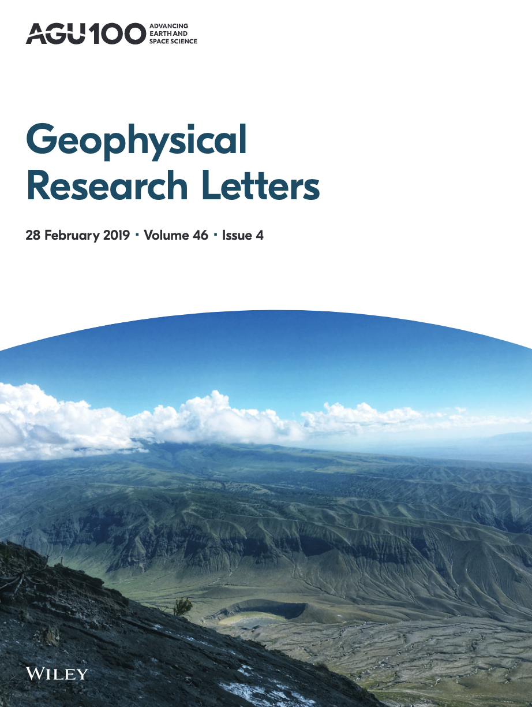
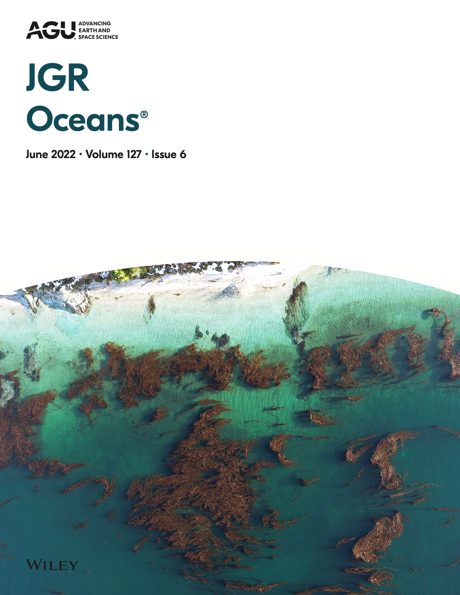

Hello! I am a climate scientist at Nanyang Technological University, Singapore.
I have over a decade of international research experience across six countries
and multicultural environments. My expertise spans climate dynamics, climate modeling,
sea-level change, monsoons, extreme events, climate change impacts, and the application
of big data analysis.
As a Senior Research Fellow at the Earth Observatory of Singapore, Nanyang Technological University (NTU),
I contribute to addressing pressing climate challenges through both research and teaching initiatives.
I have contributed significantly to sustainability through various projects and have demonstrated
leadership in fostering international scientific collaborations, conducting observational field campaigns,
and engaging in education and outreach activities.
My work has also involved active participation in global initiatives such as the CLIVAR Pacific Region Panel,
UN Ocean Decade Vision 2030, and the WCRP Global South Inclusion Task Team. Through these collaborations,
I strive to bridge the gap between cutting-edge science and real-world resilience solutions.
07/2020–Present | Senior Research Fellow | Earth Observatory of Singapore, Nanyang Technological University, Singapore
06/2017–06/2020 | Research Fellow | Asian School of the Environment, Nanyang Technological University, Singapore
05/2016–03/2017 | Special Research Support Staff/Foreign Research Fellow | Environmental Informatics, University of Aizu, Japan
04/2015–04/2016 | Postdoctoral Research Associate | Mechanical Engineering, Texas A&M University at Qatar
Affiliate and Visiting Positions
02/2022–Present | Research Affiliate | Cooperative Institute for Research in Environmental Sciences, University of Colorado Boulder, USA
05/2022–06/2022 | Visiting Researcher | NORCE Norwegian Research Centre, Bergen, Norway
10/2022–11/2022 & 09/2017–12/2017 | Visiting Researcher | CIRES, University of Colorado Boulder, USA
Education
2009–2014 | Ph.D. | Indian Institute of Technology Khargpur, India
Thesis: Role of air sea interaction and midlatutde processes on the failure of Indian summer monsoon


Journal Publications (Published/Accepted)
Latest available (2023) Impact Factor (IF) is mentioned
Papers cited in IPCC AR6 are denoted by $$$
Papers in top 10% Scopus journal (2023) in respective fields are denoted by *Top 10%
Attention score (Altimetric) for selected articles is mentioned in percentiles
Weaver, M. M., Garner, A. J., Samanta, D., Mann, M. E., & Horton, B. P. Shifting seasonal tropical cyclone genesis and landfall patterns with impacts on Southeast Asia in a warmer climate. Communications Earth & Environment , accepted IF: 9.5 *Top 10%*
Tan, F.‡, Samanta, D.‡, Morgan, K., Martin, P., Chua, S., Aw, Z., Lai, I., Meltzner, A. J., Wang, J., & Horton, B. P. (2025). El Niño was a key driver of anomalous ocean warming in Southeast Asia in 2023. Scientific Reports , 15, 16106. https://doi.org/10.1038/s41598-025-99511-w. IF: 4.3 ‡Joint 1st author (equal contribution)
Koh, Z. Y., Grandey, B. S., Samanta, D. , Switzer, A. D., Horton, B. P., Dauwels, J., & Chew, L. Y. (2024). Tide–surge interaction near Singapore and Malaysia using a semi-empirical model. Ocean Science , 20, 1495–1511.
https://doi.org/10.5194/os-20-1495-2024 IF: 4.1 *Top 10%
He, S., Jackisch, D., Feng, L., Samanta, D. , Wang, X., & Goodkin, N. F. Uncovering below–cloud processes during tropical rain events through simultaneous and continuous real-time monitoring of rain and vapor isotopes. Journal of Geophysical Research: Atmospheres , 129(22), e2023JD040084. doi: https://doi.org/10.1029/2023JD040084. IF: 4.7 *Top 10%
Warms, M., Karnauskas, K. B., & Samanta, D. (2024). Intercomparison of ocean temperature and circulation near the Galápagos Islands in high–resolution models and observations. Progress in Oceanography , 227(103301). doi: https://doi.org/10.1016/j.pocean.2024.103301. IF: 3.8 *Top 10%
Garner, A. J., Samanta, D. , Weaver, M. M., & Horton, B. P. (2024) Changes to tropical cyclone trajectories in Southeast Asia under a warming climate. npj Climate and Atmospheric Science , 7(156). doi: https://doi.org/10.1038/s41612-024-00707-0. IF: 9.7
>> 99th percentile across all journals and 98th percentile in the same journal of a similar age
>> Media Highlight –Nanyang Technological University, CNA, The Strait Times, Science Daily etc.
Samanta, D. , Vairagi, V., Richter, K., McDonagh, E. L., Karnauskas, K. B., Goodkin, N. F., Chew, L. Y., & Horton, B. P. (2024). The role of anthropogenic forcings on historical sea-level change in the Indo–Pacific warm pool region. Earth’s Future , 12(3), e2023EF003684, doi: https://doi.org/10.1029/2023EF003684. IF: 8.7 *Top 10%
>> 87th percentile across all journal of a similar age
Grandey, S. B., Koh, Z. Y., Samanta, D. , Horton, B. P., Dauwels, J., & Chew L. Y. (2023). Monte Carlo Drift Correction – Quantifying the drift uncertainty of global climate models. Geoscientific Model Development , 16, 6593–6608. doi: https://doi.org/10.5194/gmd–16–6593–2023. IF: 6.1 *Top 10%
Walter, R. M., Sayani, H. R., Felis, T., Cobb, K. M., Abram, N. J., Arzey, A. K., Atwood, A. R., Brenner, L. D., Dassié, É. P., DeLong, K. L., Ellis, B., Emile–Geay, J., Fischer, M. J., Goodkin, N. F., Hargreaves, J. A., Kilbourne, K. H., Krawczyk, H., McKay, N. P., Moore, A. L., Murty, S. A., Ong, M. R., Ramos, R. D., Reed, E. V., Samanta, D. , Sanchez, S. C., Zinke, J., and the PAGES CoralHydro2k Project Members (2023). The CoralHydro2K Database: A global, actively–curated compilation of coral δ18O and Sr/Ca proxy records of tropical ocean hydrology and temperature for the Common Era. Earth System Science Data , 15(5), 2081–2116. doi: https://doi.org/10.5194/essd–15–2081–2023. IF: 12.1 *Top 10%
>> 95th percentile across all journals and 89th percentile in same journal of a similar age
Chen, M., Martin, P., Ren, H. A., Zhang, R., Samanta, D. , Chen, Y., Hughen, K. A., Phan, K. H., Vo, S., T. & Goodkin, N. F. (2023). Enhanced monsoon driven upwelling in Southeast Asia during Little Ice Age. Paleoceanography and Paleoclimatology , 38(4), e2022PA004546. doi: https://doi.org/10.1029/2022PA004546. IF: 3.5 *Top 10%
Kim, H. L., Li, T., Kalsi, N., Shaw, T. A., Ang, K. C., Cheng, K. C., Ratan, A., Peltier, W. R, Samanta, D. , Pratapneni, M., Schuster, S. C., & Horton, B. P. (2023). Prehistoric human migration out of Sundaland was driven by sea-level rise. Communications Biology , 6 (150), doi: https://doi.org/10.1038/s42003–023–04510–0. IF: 5.6 *Top 10%
>> 99th percentile across all journals and 97th percentile in same journal of a similar age
>> Media Highlight –Nanyang Technological University; Phys.org; MSN; Science Daily, etc.
Majumdar, A., Samanta, D. , & Das, R. (2022). Chemical characteristics and trends of Indian Summer Monsoon Rainfall: A Review. Aerosol and Air Quality Research, 22(7), doi: https://doi.org/10.4209/aaqr.220019. IF: 2.8
Kannad, A., Goodkin, N. F., Samanta, D. , Murty, S. A., Ramos, R., Smerdon, J. E., & Gordon, A. (2022). Drivers of coral reconstructed salinity in the South China Sea and maritime continent: the influence of the 1976 Indo–Pacific climate shift. Journal of Geophysical Research: Oceans , 127(6), e2021JC017787, doi: https://doi.org/10.1029/2021JC017787. IF: 4.2
>> 87th percentile across all journals and 88th percentile in the same journal of a similar age
Kaundal, M., Raju, J. N., Samanta, D. , & Dash, M. K. (2022). Seasonal forcing to the spiciness generation in South Indian Ocean salinity maxima. Ocean Dynamics , 72, 313–323, doi: https://doi.org/10.1007/s10236–022–01502–2. IF: 2.3
Majewski, J. M., Meltzner, A. J., Switzer, A. D., Shaw, T. A., Li, T., Bradley, S., Walker, J. S. W., Kopp, R. E., Samanta, D. , Natawidjaja, D. H., Suwargadi, B. W., & Horton, B. P. (2022). Extending instrumental sea level records in the tropics using coral microatolls, an example from Southeast Asia. Geophysical Research Letters, 49(4), e2021GL095710, doi: https://doi.org/10.1029/2021GL095710. IF: 5.2 *Top 10%
>> 92nd percentile across all journals of a similar age
Goodkin, N. F., Samanta, D. , Bolton, A., Ong, M. R., Hoang, P. K., Vo, S. T., Karnauskas, K. B., & Hughen, K. A. (2021). Natural and anthropogenic forcing of multi–decadal to centennial scale variability of sea surface temperature in the South China Sea. Paleoceanography and Paleoclimatology, 36(10), e2021PA004233, doi: https://doi.org/10.1029/2021PA004233. IF: 3.5 *Top 10%
>> 91st percentile across all journals and 91st percentile in same journal of a similar age
>> Journal Highlight –Oct 2021 volume cover, Paleoceanography and Paleoclimatology
Samanta, D. , Goodkin, N. F. & Karnauskas, K. B. (2021). Volume and heat transport in the South China Sea and Maritime Continent at present and the end of the 21st century. Journal of Geophysical Research: Oceans, 126(9), e2020JC016901, doi: https://doi.org/10.1029/2020JC016901. IF: 4.2
>> 91th percentile across all journals and 94th percentile in the same journal of a similar age
>> Among most downloaded articles within 12 months of publication in JGR Oceans
Hari Prasad, K. B. R. R., Ramu, D. A., Rao, S. A., Hameed, S. N., Samanta, D. , & Srivastav, A. (2021). Reducing systematic biases over Indian region in CFS V2 by dynamical downscaling. Earth and Space Science, 8(6), e2020EA001507, doi: https://doi.org/10.1029/2020EA001507. IF: 3.4
He, S., Jackisch, D., Samanta, D. , Yi, P. K. Y., Liu, G., Wang, X., & Goodkin, N. F. (2021). Understanding tropical convection through triple oxygen isotopes in precipitation from the Maritime Continent. Journal of Geophysical Research: Atmospheres, 126(4), e2020JD033418, doi: https://doi.org/10.1029/2020JD033418. IF: 4.7 *Top 10%
Li, T., Shaw, T. A., Samanta, D. , Baranskaya, A. V., Khan, N. S., & Horton, B. P. (2020). Past, present and future sea level change in the Russian Arctic. Arctic Review, 6, 70–77
Mohtar, A. T., Hughen, K. A., Goodkin, N. F., Streanga, I. M., Ramos, R., Samanta, D. , Cervino, J., & Switzer, A. (2020). Coral based proxy calibrations constrain ENSO driven sea surface temperature and salinity gradients in the Western Pacific Warm Pool. Paleogeography, Paleoclimatology, Paleoecology, 561, 110037, doi: https://doi.org/10.1016/j.palaeo.2020.110037. IF: 2.6 *Top 10%
>> 95th percentile across all journals and 94th percentile in the same journal of a similar age
Samanta, D. , Rajagopalan, B., Karnauskas, K. B., Zhang, L., & Goodkin, N. F. (2020). La Niña’s diminishing fingerprint on the Central Indian summer monsoon. Geophysical Research Letters, 47(2), e2019GL086237, doi: https://doi.org/10.1029/2019GL086237. IF: 5.2 $$$ *Top 10%
>> 82nd percentile across all journals of a similar age
>> Among top 10% most downloaded papers in Geophysical Research Letters (2020)
Samanta, D. , Karnauskas, K. B., & Goodkin, N. F. (2019). Tropical Pacific SST and ITCZ biases in climate models: Double trouble for future rainfall projections?. Geophysical Research Letters, 46(4), 2242–2252, doi: https://doi.org/10.1029/2018GL081363. IF: 5.2 $$$ *Top 10%
>> 80th percentile across all journals of a similar age
>> Among top 10% most downloaded papers in Geophysical Research Letters (Jan 2018–Dec 2019)
Samanta, D. , Hameed, S. N., Jin, D., Thilakan, V., Ganai, M., Rao, S. A., & Deshpande, M. (2018). Impact of a narrow coastal Bay of Bengal sea surface temperature front on an Indian summer monsoon simulation. Scientific Reports, 8, 17694, doi: https://doi.org/10.1038/s41598–018–35735–3. IF: 4.3 $$$ *Top 10%
>> 90th percentile across all journals and 86th percentile in same journal of a similar age
>> Media Highlight – TechExplorist, DownToEarth, The Hindu BusinessLine
Samanta, D. , Dash, M. K., & Pandey, P. C. (2018). Behaviour of latent heat flux over the Bay of Bengal during Indian summer monsoon deficit period. Vayumandal, 44(2), 15–30
Samanta, D. , Karnauskas, K. B., Goodkin, N. F., Coats, S., Smerdon, J. E., & Zhang, L. (2018). Coupled model biases breed spurious low‐frequency variability in the tropical Pacific Ocean. Geophysical Research Letters, 45(19), 10609–10618, doi: https://doi.org/10.1029/2018GL079455. IF: 5.2 *Top 10%
>> 88th percentile across all journals of a similar age
He, S., Goodkin., N., Jackisch, D., Ong, M. R., & Samanta, D. (2018). Continuous real–time analysis of the isotopic composition of precipitation during tropical rain events: insights into tropical convection. Hydrological Processes, 32(11), 1531–1545, doi: https://doi.org/10.1002/hyp.11520. IF: 2.8
>> Among top 10% most downloaded papers in Hydrological Processes (Jan 2018–Dec 2019)
Dey, S., Dash, M. K., Deb, P., Samanta, D. , Sharma, R., Gairola, R. M., Kumar, R., & Pandey, P. C. (2018). Unusual premonsoon eddy and Kelvin wave activities in the Bay of Bengal during Indian summer monsoon deficit in June 2009 and 2012. IEEE Geoscience and Remote Sensing Letters, 15(4), 483–487, doi: https://doi.org/10.1109/LGRS.2018.2802543. IF: 4.0
Samanta, D. , Dash, M, K., Goswami, B. N., & Pandey, P. C. (2016). Extratropical anticyclonic Rossby wave breaking and Indian summer monsoon failure. Climate Dynamics, 46, 1547–1562, doi: https://doi.org/10.1007/s00382–015–2661–7. IF: 4.4
Samanta, D. , Dash, M. K., & Pandey, P. C. (2013). Unusual circulation pattern during Indian summer monsoon failure in July 2002 and June 2009. Natural Hazards, 65, 295–302, doi: https://doi.org/10.1007/s11069–012–0357–4. IF: 3.6
Journal Publications (In Revision/ Submitted)
Xu, Y., Zhu, W., Samanta, D., & Horton, B. P. Enduring impacts of El Niño on life expectancy on past and future climates. Nature Climate Change, in revision
Chaubey, P. K., Attada, R., Sooraj, K.P., Saini, R., Samanta, D., & Switzer, A. D. Future changes in hydroclimate extremes and intertropical convergence zone over Hindu Kush Himalaya. Advances in Climate Change Research, submitted
Fox-Kemper, B., DeRepentigny, P., Treguier, A. M., Stepanek, C., O’Rourke, E., Mackallah, C., Meucci, A., Aksenov, Y., Durack, P. J., Feldl, N., Hernaman, V., Heuzé, C., Iovino, D., Madan, G., Marquez, A. L., Massonnet, F., Mecking, J., Samanta, D., Taylor, P. C., Tseng, W., Vancoppenolle, M. CMIP7 data request: Ocean and Sea Ice priorities and opportunities. Geoscientific Model Development, to submit
Book Chapter Publication
Samanta, D., Sea level change in Asia, in Sustainable Development Perspective in Earth Observations, Elsevier, (327–344, ISBN 9780443140723). https://doi.org/10.1016/B978-0-443-14072-3.00015-0
Other Publications and Policy Contributions
Wagner T., Clift P., Dommain R., Hanebuth T. J. J., Novico F., Shaw T. A., Vogel H., & L2S Sunda Science Team (2024). The Sunda Region in maritime Southeast Asia: A tropical window into past global carbon-climate feedbacks. Past Global Changes Magazine, 32(2), 68–69. doi: https://doi.org/10.22498/pages.32.2.68
Sabine, C., Robinson, C., Isensee, K., Bastian, L., Batten, S., Bellerby, R., Blasiak., R., Laarissa, S., Lira Loarca, A., McGeachy, C., McKinley, G., Melbourne Thomas, J., Ortega Cisneros, K., Qiao, F., Samanta, D., Sanders, R. & Sarma, V. V. S. S. (2024). Ocean Decade Vision 2030 White Papers – Challenge 5: Unlock Ocean-Based Solutions to Climate Change. Paris, UNESCO–IOC. (The Ocean Decade Series, 51.5.). https://doi.org/10.25607/kbtq–nm78
CONTRIBUTED DATASETS
Walter, R. M., Sayani, H. R., Felis, T., Cobb, K. M., Abram, N. J., Arzey, A. K., Atwood, A., Brenner, L. D., Dassié, E. P., DeLong, K. L., Ellis, B., Fischer, M. J., Goodkin, N. F., Hargreaves, J. A., Kilbourne, K. H., Krawczyk, H. A., McKay, N. P., Murty, S. A., Ramos, R. D., Reed, E. V., Samanta, D., Sanchez, S. C., Zinke, J.. PAGES CoralHydro2k Project Members (2022-02-02): NOAA/WDS Paleoclimatology - CoralHydro2k Database (Common Era coral d18O and Sr/Ca data compilation). NOAA National Centers for Environmental Information. https://doi.org/10.25921/yp94-v135.
Life Member: The Indian Science Congress Association (ISCA)
Member: Asia Oceania Geosciences Society (AOGS)
Member: European Geosciences Union (EGU)
Member: Young Earth System Scientists community (YESS)
Conference organizing and chairing
Convenor, OS01–Understanding Multiscale Sea-level Change Using Observations and Models: Global to Local. AOGS Annual Meeting 2025, 27 Jul–1 Aug, 2025, Singapore
Co-Convenor, OS18–Subseasonal to seasonal prediction and its applications. AOGS Annual Meeting 2025, 27 Jul–1 Aug, 2025, Singapore
Primary Convenor, Southeast Asia and the Indo-Pacific: Past, Present, and Future Climate and Environment. AGU Fall Meeting 2024, 9–13 Dec, 2024, Washington DC, USA
Co-Convenor, 2014–2024: The Decade of Unusual ENSO Behaviour: Understanding Variability and Impacts. AGU Fall Meeting 2024, 9–13 Dec, 2024, Washington DC, USA
Co-Convenor, OS08–Past, Present and Future Sea-Level Change in Asia, Oceania and Beyond. AOGS Annual Meeting 2024, 23–28 Jun, 2024, Pyeongchang, Republic of Korea
Convenor, OS04–Understanding Multiscale Sea-level Change Using Observations and Models: Global to Local. AOGS Annual Meeting 2023, 31 Jul–4 Aug, 2023, Singapore
Organizing committee member, 3rd International Conference on Biodiversity and Climate Change: Sustainable Development Perspective, 16–19 Feb 2023, IIT Kharagpur, India
Co-Convenor, OS16–Understanding Sea Level Change: Global to Local, from Past to Future. AOGS Annual Meeting 2021, 1–6 Aug 2021, Online
AMS: Journal of Climate, Journal of Physical Oceanography, Journal of Atmospheric and Oceanic Technology, Earth Interactions
AGU: Earth’s Future, AGU Advances, Geophysical Research Letters, Journal of Geophysical Research – Atmospheres, Journal of Geophysical Research – Oceans, Earth and Space Science
IOP: Environmental Research Letters, Environmental Research: Climate, Environmental Research Communications
RMetS: Quarterly Journal of the Royal Meteorological Society, International Journal of Climatology, Atmospheric Science Letters
Springer Nature: Climate Dynamics, Ocean Dynamics, Asia–Pacific Journal of Atmospheric Sciences, Environmental Monitoring and Assessment, Proceedings of National Academy of Sciences India Section A: Physical Sciences
ASLO: Limnology and Oceanography
IEEE: IEEE Geoscience and Remote Sensing Letters
Elsevier: Journal of Atmospheric and Solar-Terrestrial Physics, Marine Environmental Research
Frontiers: Earth Science: Quaternary Science, Geomorphology and Paleoenvironment
MDPI: Remote Sensing, Atmosphere, Sustainability, Climate, Journal of Marine Science and Engineering
Universidad Nacional Autónoma de México: Atmósfera
National Academy of Agricultural Science: Current Agricultural Research Journal
Meteorological Service Singapore: MSS Research Letters
ICRACEM 2020 International conference proceedings (Springer)
Judge:
Best Student poster in Ocean Sciences, AOGS General Assembly, Aug 2023, Singapore; Outstanding Student Presentation Award, EGU General Assembly, Apr 2025; AGU Fall Meeting, Dec 2024, Dec 2020, Online; Dec 2019, San Francisco, USA; Judge, AGU Pathfinder virtual poster showcase, Fall 2019, Online; Judge, Early Career Scientists posters, SPARC General Assembly, Oct 2018, Kyoto, Japan
Student Volunteer, 2012 Ocean Sciences Meeting, 19–24 Feb 2012, Salt Lake City, USA
Volunteer and Team Member, International Workshop in Biodiversity and Climate Change, 19–22 Dec 2010, IIT Kharagpur, India
Volunteer, 56th Convocation, 2010, IIT Kharagpur, India
Research Scholars Representative, Nov 2011–Oct 2012, CORAL, IIT Kharagpur, India
Invited Talks and Panels
El Niño drove anomalous ocean warming in Southeast Asia in 2023. AOGS Annual Meeting, 31 Jul 2025, Singapore (scheduled)
Role of anthropogenic forcings on historical sea-level change in the Indo-Pacific warm pool region, NASA GISS Sea-Level Rise Seminar Series, , 29 Oct 2024 (Panel)
Wave of Change Festival 2024, 28 Sep 2024, Art Science Museum, Singapore (Panel)
Climate Resilience in Southeast Asia: strengthening the role of Parliamentarians conference, 12–13 Jul 2024, Parliament of Malaysia, Malaysia (Panel)
Attribution of historical sea-level changes in the Indo-Pacific region, Climate Modelling workshop, Norway-Singapore Science Week, Nov 2022, NTU, Singapore
Detecting natural and anthropogenic footprints on sea-level rise over the Indo-Pacific warm pool region, 28 Sep 2022, Centre for Climate Research Singapore, Singapore
US CLIVAR Tropical Pacific Observing Needs Workshop, 24–26 May 2021, Online (Panel)
La Niña’s diminishing fingerprint on the Indian summer monsoon, 29 Jan 2020, Centre for Climate Research Singapore, Singapore
Challenges in climate modelling for predicting future climate, 22 Apr 2019, IDP in Climate Studies, IIT Bombay, India
International Conference/ Meeting Presentations
Samanta, D., & Switzer, A. D. Impacts of the 2020– 2023 triple-dip La Niña on rainfall in Southeast Asia. Pan-CLIVAR Meeting and CLIVAR Symposium Bridging Science and Society in Southeast Asia and Beyond, 22 Sep–26 Sep 2025, Bali, Indonesia (accepted)
Grandey, B. S., Samanta, D., Koh, Z. Y., Horton, B. P., & Chew, L. Y. Future sea level – new insights on uncertainty, ocean dynamics and extremes. AOGS Annual Meeting, 27 Jul–1 Aug 2025, Singapore (accepted)
Gulakaram, V., Samanta, D., Horton, B. P., & Morgan, K. Past, present and future marine heatwaves in Southeast Asia. AOGS Annual Meeting, 27 Jul–1 Aug 2025, Singapore (accepted)
Samanta, D., Grandey, B. S., Koh, Z. Y., Chew, L. Y., & Horton, B. P. Future sea level rise in Southeast Asia – new insights on uncertainty, ocean dynamics and extremes. EGU General Assembly, 27 Apr–2 May 2025, Vienna, Austria
Horton, B. P., Chardot, L., Chua, S., Grandey, B. S., Iskan, M. H., Li, T., Ng, T., Samanta, D., Shaw, T., Tan, F. Tan, S., Tsyrulneva, I. & Yap, W. Sea-level science in Singapore and Southeast Asia. EGU General Assembly, 27 Apr–2 May 2025, Vienna, Austria
Dutta, S., Samanta, D., & Deb, P. Intensified heat stress risks at Indian mass gathering sites due to climate change. EGU General Assembly, 27 Apr–2 May 2025, Vienna, Austria
Samanta, D., Jevrejeva, S., Karnauskas, K. B., Palanisamy, H., Goodkin, N. F., Benjamin S. Grandey, Chew, L. Y., & Horton, B. P. Impact Of Climate Model Resolution On Sterodynamic Sea-Level Projections Across Southeast Asia. AGU Fall Meeting, 9–13 Dec 2024, Washington DC, USA
Weaver, M. M., Garner, A. J., Samanta, D., Horton. B. P., Mann, M. E. Seasonal Variations of Tropical Cyclone Genesis and Landfall Patterns Impacting Southeast Asia in a Warmer Climate. AGU Fall Meeting, 9–13 Dec 2024, Washington DC, USA
Zhu, W., Xu, Y., Horton, B. P., Samanta, D. Life Expectancy at Risk: The Enduring Impact of El Niño on Human Mortality. 19th International Longevity Risk and Capital Market Solutions Conference, 16–17 Sep 2024, Amsterdam, Netherlands
Morgan, K., Valino, D., Ong, J. J., Samanta, D., Victoria, F., Ecological impacts and regional climate drivers of coral bleaching on turbid reefs in Southeast Asia, European Coral Reef Symposium, 2–5 Jul 2024, Naples, Italy
Samanta, D., Richter, K., Jevrejeva, S., Grandey, B. S., Karnauskas, K. B., Vairagi, V., McDonagh, E., L., Goodkin, N. F., Jenkins, S., Chew, L. Y., & Horton, B. P. Historical sea level response to volcanic forcing estimated from large–ensemble global climate model simulations, 21st Annual Meeting of the AOGS, 23–28 June 2024, Pyeongchang–gun, Republic of Korea
Garner, A. J., Samanta, D., Weaver, M. M., Horton. B. P., Changing characteristics of tropical cyclone tracks in Southeast Asia under a warming climate. AGU Fall Meeting, 11–15 Dec 2023, San Francisco, USA
Weaver, M. M., Garner, A. J., Samanta, D., Horton. B. P., Mann, M. E. Shifting tropical cyclone genesis and landfall patterns with impacts for Southeast Asia in a warmer climate. AGU Fall Meeting, 11–15 Dec 2023, San Francisco, USA
Goodkin, N. F., Ramos, R. D., Murty, S. A., Samanta, D., Chen, M., Kannad, A., Ong, M. R., and the MarGe Lab, An integrated review of the climate driven variations in the Indo–Pacific using a multi–proxy, multi geographical approach in scleractinian corals. AGU Fall Meeting, 11–15 Dec 2023, San Francisco, USA (invited)
Samanta, D. Garner, A. J., Weaver, M. M., Horton. B. P., Evolving tropical cyclone characteristics over Southeast Asia in a changing climate. 18th APRU Multi–Hazards Symposium 2023, 29–30 Nov 2023, Singapore
Garner, A. J., Samanta, D., Weaver, M. M., Horton. B. P., Changes to tropical cyclone tracks over Southeast Asia in a warming climate. AOGS Annual Meeting, 30 Jul–4 Aug, 2023, Singapore
Ng, T., Samanta, D., Oelsmann, J., Gangadharan, N., Li, T., Moise, A., Horton, B. P. Sea-level trends at nine Southeast Asia coastal cities from 1993 to 2018. 20th Annual Meeting of the AOGS, 31 Jul–4 Aug, 2023. Singapore
Samanta, D., Jevrejeva, S., Karnauskas, K. B., Palanisamy, H., Goodkin, N. F., Chew, L. Y., & Horton, B. P. Dynamic sea-level change in Southeast Asia by the end of 21st century. The 9th COAA International Conference on Atmosphere, Ocean, and Climate Change (ICAOCC23), 27–28 Jul 2023, Singapore
Samanta, D., Vairagi, V., Richter, K., McDonagh, E., Karnauskas, K. B., Goodkin, N. F., Chew, L. Y., & Horton, B. P. Detection and Attribution of Historical Sea Level Changes over the Indo–Pacific Warm Pool Region. AGU Fall Meeting, 12–16 Dec 2022, Chicago, USA
He, S., Jackish, D., Wang, X., Feng, L. Samanta, D., & Goodkin, N. F. Simultaneous and continuous real–time monitoring of stable isotopes of water vapor and rain in the tropics: insight into vapor–rain interaction. AGU Fall Meeting, 12–16 Dec 2022, Chicago, USA
Grandey, B. S., Koh, Z. Y., Samanta, D., Horton, B. P., Dauwels, J., & Chew, L. Y. Is thermal expansion of the ocean a linear function of the excess energy in the earth’s climate system? Institute of Physics Singapore meeting, 28–30 Sep 2022, Singapore
Majewski, J. M., Meltzner, A., Switzer, A., Shaw, T., Li, T., Bradley, S., Walker, J., Kopp, R. E., Samanta, D., Natawidjaja, D., Suwargadi, B., & Horton, B. P. Extending instrumental sea level records using coral microatolls. PALSEA Annual Meeting, 17–20 Jul 2022, Singapore
Samanta, D., Vairagi, V., Richter, K., McDonagh, E., Karnauskas, K. B., Goodkin, N. F., Chew, L. Y., & Horton, B. P. Detecting anthropogenic footprint of sea level rise over Indo–Pacific warm pool region. WCRP Sea Level Conference, 12–16 Jul 2022, Singapore
Grandey, B. S., Koh, Z. Y., Samanta, D., Horton, B. P., Dauwels, J., & Chew, L. Y. Statistical modelling of thermosteric sea level rise as a function of radiative flux. WCRP Sea Level Conference, 12–16 Jul 2022, Singapore
Majewski, J. M., Meltzner, A., Switzer, A., Shaw, T., Li, T., Bradley, S., Walker, J., Kopp, R. E., Samanta, D., Natawidjaja, D., Suwargadi, B., & Horton, B. P. Utilizing coral microatolls to extend instrumental sea level records. WCRP Sea Level Conference, 12–16 Jul 2022, Singapore
Goodkin, N. F., Samanta, D., Hughen, K. A., Ong, M., Bolton, A., & Karnauskas, K. B. Vietnam climate experienced multi–decadal variability over the past 400 years and decoupling seasonal SST with anthropogenic warming. Ocean Sciences Meeting, 24 Feb–4 Mar 2022, Online
Majumdar, A., Samanta, D., & Das, R. Chemical characteristics of and trends of Indian summer monsoon rainfall. AGU Fall Meeting 2021, 13–17 Dec 2021, New Orleans, USA
Shaw, T., Chua, S., Cahill, N., Kopp, R., Peng, D., Samanta, D., Li, T., Tkalich, P., Majewski, J., Switzer, A., & Horton, B. P. Magnitudes and rates of past, present, and future sea-level change in Singapore. AGU Fall Meeting 2021, 13–17 Dec 2021, New Orleans, USA
Sayani, H.R., Walter, R. M., Abram, N. J., Cobb, K. M., Felis, T., Atwood, A. R., Arzey, A., Brenner, L. D., Dassié, E. P., DeLong, K. L., …, Samanta, D., Zinke, J. & CoralHydro2k Project Members. The CoralHydro2k Database: a global compilation of coral δ18O and Sr/Ca records for reconstructing tropical hydroclimate over the Common Era. AGU Fall Meeting 2021, 13–17 Dec 2021, New Orleans, USA
Shaw, T., Chua, S., Majewski, J., Ng, T., Peng, D., Samanta, D., Li, T., Switzer, A., & Horton, B. P. Past and present sea-level changes in Singapore as constraints for future projections. INQUA–MARE workshop, 29 Nov–1 Dec, 2021. Online
He, S., Jackisch, D., Samanta, D., Yi, P. K. Y., Liu, G., Wang, X., & Goodkin, N. F. (2021). Understanding tropical convection through triple oxygen isotopes in precipitation from the Maritime Continent. AOGS 2021, 1–6 Aug 2021, Online/Singapore
Goodkin, N. F., Samanta, D., Hughen, K. A., Ong, M., Bolton, A., & Karnauskas, K. B. Vietnam climate experienced multi–decadal variability over the past 400 years and decoupling seasonal SST with anthropogenic warming. 14th International Coral Reef Symposium, 18–23 Jul 2021, Bremen, Germany
Sayani, H., Abram, N., Cobb, K., Felis, T., Walter, R., Hargreaves, J., Atwood, A., Brenner, L., DeLong, K., Ellis, B., …, Samanta, D., Sanchez, S., Zinke, J., & Zhu, F. Reconstructing regional hydrology from coral archives: First results from PAGES CoralHydro2K project. 14th International Coral Reef Symposium, 18–23 Jul 2021, Bremen, Germany
Shaw, T., Li, T., Samanta, D., Khan, N. S., Baranskyaya, A. V., & Horton, B. P. Past, present and future sea level change in the Russian Arctic. Palaeoarc 2021, 24–28 May 2021, Pisa, Italy/Online
Samanta, D., Karnauskas, K. B., Goodkin, N., & Horton, B. P. Equatorial Pacific Sea surface temperature is one of the drivers of the tropical Pacific double ITCZ bias in climate models. Tropical Pacific Observing needs to Advance Process Understanding and Representation in Models Workshop, 24–26 May 2021, Online
Sanchez, S., Atwood, A., Fischer, M., Walter, R. M., Sayani, H., Felis, T., Abram, N., Cobb, K., Brenner, L., Dassie, E., …, Samanta, D., Zhu, F., Zinke, J. & Martran, B. Improving paleo–hydroclimate reconstructions with observations of 18O of seawater. Tropical Pacific Observing needs to Advance Process Understanding and Representation in Models Workshop, 24–26 May 2021, Online
Samanta, D., Jevrejeva, S., Palanisamy, H, K., Karnauskas, K. B., Goodkin, N., & Horton, B. P. Role of regional ocean dynamics in dynamic sea level projections by the end of the 21st century over Southeast Asia. EGU General Assembly 2021, 21–30 Apr 2021, Online
Shaw, T., Chua, S., Majewski, J., Li T., Kopp, R., Samanta, D., & Horton, B. P. Past, present and future sea levels in Singapore. EGU General Assembly 2021, 21–30 Apr 2021, Online (invited)
Sayani, H., Abram, N., Cobb, K., Felis, T., Walter, R., Hargreaves, J., Atwood, A., Brenner, L., DeLong, K., Ellis, B., …, Samanta, D., Sanchez, S., Zinke, J., & Zhu, F. Evaluating impacts of methodology on 20th century coral–based seawater δ18Osw reconstructions – the PAGES CoralHydro2K project. EGU General Assembly 2021, 21–30 Apr 2021, Online
Samanta, D., Jevrejeva, S., Karnauskas, K. B., Goodkin, N., & Horton, B. P. Dynamic sea level simulation for Southeast Asia in the CMIP6 HighResMIP models: Mean biases and Changes by the end of the 21st Century. AGU Fall Meeting 2020, 1–17 Dec 2020, Online
Walter, R., Sayani, H., Cobb, K., Felis, T., Abram, N. J., Hargreaves, J., DeLong, K. L., Eggleston, S., Ellis, B., Goodkin, N. F., Kilbourne, K. H., Murty, S. A., Ramos, R., Samanta, D., Sanchez, S., & Zhu, F. Best Practices for Coral Proxy–SST calibration for 20th century δ18Οsw reconstruction – Initial results from CoralHydro2k. AGU Fall Meeting 2020, 1–17 Dec 2020, Online
Li, T., Shaw, T., Samanta, D., Khan, N. S., Baranskyaya, A. V., & Horton, B. P. Past, present and future sea-level change in the Russian Arctic sea levels: Past, present and future. 8th Annual meeting of the International Expert Council on Cooperation in the Arctic 2020, 12 Nov 2020, Russia/Online
Li, T., Khan, N., Engelhart, S. E., Vacchi, M., Shaw, T. A., Samanta, D., Peltier, W. R., Wu, Pa., & Horton, B. P. Past and present sea level changes and their uncertainties in North America from 3D Glacial Isostatic Adjustment modelling. GSA Annual Meeting 2020, 26–30 Oct 2020, Canada/Online
Kannad, A., Goodkin, N. F., Murty, S. A., Ramos, R., Samanta, D., & Gordon, A. Paleoclimate drivers of the Indonesian and South China Throughflow, the curious case of the IOD. EGU General Assembly 2020, 3–8 May 2020, Vienna, Online
Goodkin, N. F., Samanta, D., Ramos, R., & Karnauskas, K. B. Heat and water exchange between the western equatorial Pacific Ocean and South China Sea using coral geochemistry and ROMS. Ocean Sciences Meeting 2020, 16–21 Feb 2020, San Diego, USA
Samanta, D., Goodkin, N. F., & Karnauskas, K. B. Climatological simulation of upper ocean dynamics in the South China Sea using ROMS. Earth Observatory of Singapore Annual Meeting, 9–10 Jan 2020, Singapore
He, S., Jackisch, D., Samanta, D., Wang, X., & Goodkin, N. F. Interannual variability of triple oxygen isotopes in precipitation from a tropical region. Earth Observatory of Singapore Annual Meeting, 9–10 Jan 2020, Singapore
Horton, B. P., Shaw, T. A., Li, T., Chen, H. X., Majewski, J., Meltzner, A., Jevrejeva, J., Samanta, D., & Kopp, R. E. Driving mechanisms of past and present sea level change. Earth Observatory of Singapore Annual Meeting, 9–10 Jan 2020, Singapore
Samanta, D., Rajagopalan, B., Karnauskas, K. B., Zhang, L., & Goodkin, N. F. La Niña’s diminishing fingerprint on the Indian summer monsoon. AGU Fall Meeting 2019, 9–13 Dec 2019, San Francisco, USA
Horton, B. P., Jevrejeva, S., Meltzner, A.J., Tkalich, P., Shaw, T. A., Khan, N. S., Friess, D., Kopp, R. E., Ashe, E., Hill, E., Dauwels, J. B., Majewski, J. M., Samanta, D., Chua, S., & Richards, G. T. Driving mechanisms of past and present sea level change to quantify projection uncertainties. CREATE symposium on climate change, 6 Dec 2019, Singapore
He, S., Jackisch, D., Samanta, D., & Goodkin, N. F. Interannual variability of triple oxygen isotopes in precipitation from a tropical region. Water isotopes and climate workshop, 1–3 Oct 2019, Boulder, USA
Samanta, D., Karnauskas, K. B., & Goodkin, N. F. The double ITCZ bias in GCMs: Causes and Implications for future rainfall projections. Earth Observatory of Singapore Annual Meeting, 10–11 Jan 2019, Singapore
He, S., Jackisch, D., Samanta, D., & Goodkin, N.F. A study of triple oxygen isotopes in precipitation from a tropical region. AGU Fall Meeting 2018, 10–14 Dec 2018, Washington DC, USA
Samanta, D., Karnauskas, K. B., & Goodkin, N. F. The double ITCZ bias in GCMs: Causes and implications for future rainfall projections. SPARC General Assembly, 1–5 Oct 2018, Kyoto, Japan
Samanta, D., Karnauskas, K., Goodkin, N. F., Smerdon, J., Coats, S., & Zhang L. The relationship between GCM biases and low–frequency variability in the tropical Pacific. EGU General Assembly 2018, 8–13 Apr 2018, Vienna, Austria
Samanta, D., Karnauskas, K., Goodkin, N. F., Smerdon, J., Coats, S., & Zhang, L. Is Pacific Centennial Oscillation in climate models due to mean state ENSO bias?. Earth Observatory of Singapore Annual Meeting 2018, 8–9 Jan 2018, Singapore
Samanta, D., Hameed, S. N., & Jin, D. Possible improvements of multiscale Indian summer monsoon through embedded regional modelling. WCRP–JNU Training School on Monsoon Variability in Changing Climate, 16–21 Jan 2017, Jeju, Republic of Korea
Samanta, D., Cheng, W. L., & Sadr, R. Seasonal variability of atmospheric surface layer characteristics and weather pattern in Qatar. 69th Annual Meeting of APS Division of Fluid Dynamics, 20–22 Nov 2016, Portland, USA
Samanta, D., & Hameed, S. N. Simulations of the Indian summer monsoon rainfall and its relation to ENSO. JAMSTEC–CMCC Workshop for modeling and prediction of climate variability and change and its social applications, 13–14 Oct 2016, Aizuwakamatsu, Japan
Samanta, D., & Sadr R. Observational study of atmospheric surface layer and coastal weather in northern Qatar. EGU General Assembly, 17–22 Apr 2016, Vienna, Austria
Sadr, R., Cheng, W. L., & Samanta, D. Is Qatar climate changing: A possible side effect of industrial boom. 5th TAMUQ Research and Industry Partnership Showcase, 12 Apr 2016, Doha, Qatar
Samanta, D., Sadr, R., Guo, B., & Javed, W. Air flow pattern in the vicinity of photovoltaic panels. 5th TAMUQ Research and Industry Partnership Showcase, 12 Apr 2016, Doha, Qatar
Samanta, D., & Sadr, R. Study of atmospheric condition in the coastal region of Qatar. 5th TAMUQ Research and Industry Partnership Showcase, 12 Apr 2016, Doha, Qatar
Samanta, D., Sadr, R., & Guo, B. Sonic anemometer measurement of turbulence over photovoltaic panels. Photovoltaic soiling and mitigation workshop, 16 Mar 2016, Doha, Qatar
Guo, B., Figgis, B., Wu, C., Abu–Rub, H., Kawamoto, H., Sadr, R., Panchang, V., Javed, W., Yiming, W., Sandeepan, B. S., Samanta, D., & Chen, Y. Tackling Dust for Qatar’s Energy Sustainability. Conference on Electric Power and Water Desalination in the Arab World, 22–23 Feb 2014, Doha, Qatar
Dash, M. K., Dey, S., Samanta, D., & Pandey, P. C. Study of upper surface of Bay of Bengal during contrasting monsoon years. SARAL International Science and Applications Meeting, 22–24 Apr 2014, Ahmedabad, India
Dash, M. K., Samanta, D., & Pandey, P. C. Extratropical Rossby wave breaking: A cause for Indian summer monsoon failure. SAPRISE Meeting, 24–26 Jun 2013, Exeter, UK
Samanta, D., Dash, M. K., Deb, P., & Pandey, P. C. Role of Rossby wave breaking on 2009 Indian summer monsoon failure. AOGS–AGU (WPGM) Joint Assembly, 13–17 Aug 2012, Singapore
Dash, M. K., Samanta, D., & Pandey, P. C. Extreme Indian summer monsoon: Role of northern Indian Ocean. International Conference on "Opportunities and Challenges in Monsoon Prediction in a Changing Climate" (OCHAMP–2012), 21–25 Feb 2012, Pune, India
Samanta, D., Dash, M. K., Deb, P., & Pandey, P. C. Axial change in latent heat flux and sea surface temperature during contrasting Indian monsoon years. 2012 Ocean Sciences Meeting, 19–24 Feb 2012, Salt Lake City, USA
Deb, P., Dash, M. K., Samanta, D., & Pandey, P. C. Intrusion of Antarctic meltwater and its effect on upper ocean variability in the southern Indian ocean. 2012 Ocean Sciences Meeting, 19–24 Feb 2012, Salt Lake City, USA
Dash, M. K., Samanta, D., Sharma, R., Gairola, R. M., & Pandey, P. C. Mesoscale studies in the northern Indian ocean during extreme summer monsoon years. 2nd ISRO–CNES SARAL–AltiKa Science and Application Meet, 15–17 Mar 2011, Ahmedabad, India
Samanta, D., Dash, M. K., & Pandey, P. C. Anomalous atmospheric pattern during extreme period of Indian summer monsoon in 2002 and 2009. International Workshop in Biodiversity and Climate Change, 19–22 Dec 2010, IIT Kharagpur, India
Samanta, D., Dash, M. K., Chakraborty, A., & Pandey, P. C. Variation of latent heat flux over tropical Indian Ocean: A case study using TRMM observations. International Conference on Meghatropiques Science and Applications, 23–25 Mar 2009, Bengaluru, India
Dash, M. K., Samanta, D., Chakraborty, A., & Pandey, P. C. Air sea interaction over the tropical Indian ocean during extreme climate events: A case study using TRMM observations. International Conference on Meghatropiques Science and Applications, 23–25 Mar 2009, Bengaluru, India
National Conference/ Symposium Presentations
Samanta, D., Dash, M. K., & Pandey, P. C. Impact of Rossby wave on variation of Indian summer monsoon. 2nd National Conference of Ocean Society of India (OSICON 2011), 13–15 Jul 2011, Chennai, India
Samanta, D., Dash, M. K., & Pandey, P. C. On the failure of 2009 monsoon and the decadal trend of SST and Wind over the tropical Indian Ocean as inferred from TRMM observations. 16th National Space Science Symposium, 24–27 Feb 2010, Rajkot, India
Samanta, D., Dash, M. K., & Pandey, P. C. Variation of latent heat flux over tropical Indian Ocean using TMI observations. Ocean Society of India Conference 2009 (OSICON 2009), 19–21 Mar 2009, Visakhapatnam, India
Undergraduate courses
Climate Change (ES1007/CY1007), NTU, Singapore, Spring 2024; Spring 2023 (students #100), Spring 2021, (students # 92); Spring 2020 (students # 84)
Graduate courses
Guest lecture on general circulation and monsoon, Hydrology class, IIT Gandhinagar, India, Virtual, Aug 2021
Physics to graduate (BSc) students
Executive training
MBA Sustainability and Innovation Track Course, Nanyang Technological University, Singapore, Mar 2023
Executive Certificate in Corporate and Environmental Sustainability, Nanyang Technological University, Singapore, Oct 2023, Sep 2023; Aug 2023, Apr 2023; Feb 2023; Oct 2022; Sep 2022; May 2022
Certificate Programme in Sustainable Finance, Nanyang Technological University, Singapore, Oct 2023, May 2023; Feb 2023; Oct 2022
Workshop
Climate and Sea-level Changes, King Fahd University of Petroleum and Minerals, Saudi Arabia, 28–31 May 2023, Online
Live Interviews
CNA TV Interview on extreme rainfall, Singapore Tonight, Singapore, 20 Sep 2024
CNA 938 Radio Interview on Sumatra Squall, Asia First, Singapore, 19 Aug 2024
CNA 938 Radio Interview on airlines turbulence, Singapore Today on, Singapore, 13 Aug 2024
CNA 938 Radio Interview on airlines turbulence, Singapore Today, Singapore, 30 May 2024
MONEY FM 89.3 Interview on heat stress, Breakfast Show, Singapore, 15 Apr 2024
CNA938 Radio Interview on extreme weather in Singapore, Singapore Today, Singapore, 15 Mar 2021
CNA938 Radio Interview on Singapore’s weather, Understand Asia, Singapore, 19 Jan 2021
Blogs
When the Sea Ran a Fever: Southeast Asia’s Record Ocean Warming in 2023, 12 Jun 2025
Connecting the Equator to the Arctic Region, Earth Observatory of Singapore Blog, 8 Nov 2022
Documentary and Online Series
Online series on Tipping Point, The Hindu, Sep 2024
Polar Impact Asia, Documentary, Norway–Singapore Science Week, 1 Nov 2022
Commentaries
2021 has already seen the wettest and driest months in decades. Is Singapore prepared for more?, CNA Commentary, Singapore, 15 Mar 2021
Why that unusually high rainfall in Singapore during the last summer monsoon may be our new normal, CNA Commentary, Singapore, 6 Nov 2020
Expert Comments
Monsoon surge in Singapore, Lianhe Zaobao, Singapore, 16 Jan 2025
La Niña’s impact in Southeast Asia, CNA, Singapore, 18 Oct 2024
Sumatra Squall event on 17th Sep, CNA, Singapore, 18 Sep 2024
Study on the tropical cyclone changes in Southeast Asia: Nanyang Technological University; Science Daily; Borneo Bulletin; Rowan University; EurekAlert; Asia News Network; The Strait Times, Jul 2024
Onset of 2024 La Niña, The Strait Times, Singapore, 10 June 2024
Singapore’s weather with the onset of El Niño, The Strait Times, Singapore, 26 Aug 2023
Recent Hot Days in Singapore, MediaCorp 8World, 24 Apr 2023
Arctic data could help NTU scientists better predict rising sea levels in S’pore, The Strait Times, Singapore, 1 Nov 2022
Heavier rain in Singapore due to La Niña, The Strait Times, Singapore, 26 Sep 2022
From Singapore to Svalbard, Svalbardposten, Norway, 12 May 2022
Nobel prize win by climate scientists, The Strait Times, Singapore, 18 Oct 2021
Extreme rainfall in Singapore, The Strait Times, Singapore, page B5, 15 Jul 2021
Global Engagement
Committed to advancing international research collaborations and inspiring the next generation by promoting awareness of climate science, climate change impacts, sustainability and disaster resilience.
• International outreach:
Represented Singapore in a delegation to Norway (May 2022), strengthening Singapore-Norway research ties in climate science.
Visited UiT The Arctic University of Norway in Tromsø; KSAT, Ice-class Research Vessel Kronprins Haakon, and UNIS in Svalbard; NORCE in Bergen, engaging with scientists across all locations. Contributed to a documentary on collaborative research efforts.
Participated in the Youth–Exchange Programme with Asia–Oceania and North America (Kizuna Bond Project) as the exclusive departmental representative from IIT Kharagpur (3–13 Feb 2013) in Japan
Analysed and contributed insights into reconstruction initiatives and disaster management along the east coast of Japan following the 2011 tsunami and earthquake, fostering a deeper understanding of global disaster resilience
• Educational outreach with high school students:
Led open lab sessions on environmental informatics and climate science with local students at University of Aizu, Japan (8 Oct 2016; 11 Aug 2016), fostering interest in climate and environmental studies.


 


